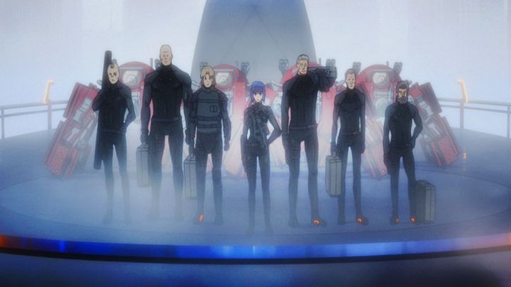

This review is one of hundreds I've written; if you've found them, you are aware that I watch a lot of animation, namely feature films and (in the case of Japanese anime) television. Believe it or not, I don't write reviews for EVERYTHING I've ever watched. I might choose not to bother writing a critque based on the lack of significance in the work, or because I was simply underwhelmed by it. Such is the case with 2015's "Ghost in the Shell - The New Movie:" I saw it in theaters when Funimation licensed it, but didn't bother buying a home video copy or reviewing it until now, some years later in 2021 (I also bought the OVA series "Arise" at the time, and the film was purely for completionist's sake). "The New Movie" (yes, it's a terrible name) is a direct follow-up to the OVA series "Ghost in the Shell - Arise," a modern entry-point into the "Ghost in the Shell" franchise. Both this movie and that series act as a reimagined prequel to it all, chronologically before the 1995 film, it's sequel "Innocence," the series "Stand Alone Complex" and IT'S film "Solid State Society." There were some high hopes for this new series, since all of "Shell's" entries were high-quality and smartly-written works of science fiction. By comparison, "Arise" was a rare misstep, not really having a purpose to exist, and relying too much on already-overused franchise imagery. "The New Movie" was much more like a new "Solid State Society" rather than the two landmark theatrical films, and I didn't particularly have high hopes after "Arise." Although even a poor-man's "Ghost in the Shell" is better than most other sci-fi anime.If you haven't seen ANY of the existing "Ghost in the Shell" animated content, you're missing out, and "The New Movie" probably isn't a great place to start. Set in a not-too-distant future where robotic augmentation of human bodies is commonplace, the franchise follows Makoto Kusanagi, AKA The Major, leading a private squad of soldiers to hunt down criminals and terrorists, with the general themes of brain-hacking and questioning what it means to be human if the body doesn't matter. Seeing "Arise" before this film isn't realy necessary, although it helps a little in understanding who certain side characters are. Just know that it occurs at a time when Major is leading the familiar faces of her group, but have not officially been hired yet by Kusunagi, a government official who wants to recruit Major and her mercenaries to form what he'd call "Section 9." Leading straight into the rest of the franchise, it ends with the formantion of 9. Opening with a thrilling scene to stop terrorists in a foreign embassy, the plot thickens into a more complex conspiracy involving a digital virus that can take over the cyberbrain of victims, something about a "Third World" composed only of data, and someone using the same body as Major to confuse the heroes. The story's actually pretty good, and one strength it has over the rest of the franchise is that it gives time to all the members of the squad (including the fun Tachikoma robots), not just the Major, Batou and Togusa. Major's constant referring to her team as "parts" in a machine, praise in her own weird way, is another element that shows the team's dynamic. But it also feels like its not as deep as it thinks it is, and simultaneously seems more complicated than it needed to be, spouting scientific jargon and bureaucratic phrases with stoic faces. The significance of the events don't hit... it's not easy to write spy thrillers to be easy and exciting to follow. There's also a sense of familiarity to it this time, as I'm certain I've seen government-run lab orphanages, rewriting memories, and controling people like puppets, all before, multiple times in this franchise. It even ends with the classic image of Major jumping backwards off a building while turning invisible... there's zero reason to reuse it yet again outside Oshii's 1995 film.  The result is that I actually liked "The New Movie" a little better than "Solid State Society," but am just tired of seeing the franchise rehash itself due to popularity, and not truly doing anything new or letting the creative teams move on to new things. Or perhaps they tried, and Production I.G. failed to make anything approaching the success of "Ghost," forcing them to return to this franchise every ten years or so to make enough money to continue on. Visually, "The New Movie" uses the same character designs and general modern aethestic of "Arise," again from Production I.G. (the same studio that's led all of the "Ghost" entries). Major's design in particular looks a little younger and more slender with bold blue hair, an interesting choice. CGI is used liberally for background elements, but isn't too distracting. The opening scene definitely evokes the abstract labyrinth visuals Mamoru Oshii was known for, but there's not much more than that. I.G. is typically good at giving a high quality production, but rarely extends themselves are far as they used to. So the visuals and animation are all better than average for anime, but certainly not as good as "Innocence" was, and perhaps looks a little too clean and mainstream.The music is usually a highlight in "Ghost," and was composed by Cornelius in "The New Movie." It's good, but largely just in the background this time. Funimation's English dub is as strong as it could be. The Funimation Bluray does have a number of interesting bonus features, although their naming is baffling. you get a English actors' reflection on the franchise in "Inside the World of Ghost in the Shell Part 2" (there's no explanation that "Part 1" is on the Bluray set for "Arise" parts 3 and 4). There's a Japanese television journalism special covering the events of the prequel series "Arise" in "Arise Explained in 25 Minutes (Extended Director's Cut)." The most interesting is a 2nd Japanese tv special called "25 Years Reviewed in 25 Minutes (Extended Director's Cut)," with several interviews with key staff members from the entire animated franchise (despite the title, this is 46 minutes long, a drastic extension compared to the 26 minutes of "Arise Explained")."Ghost in the Shell - The New Movie" is a decent and servicable sci-fi thriller. But that's not particularly high praise for "Ghost," a franchise that has long represented the best in anime science fiction, across all of its entries. "The New Movie" is good enough to end this new reboot, and I'm hopeful the studio lets the franchise lie from here on, lest its waters get further muddied. (sees 2020's 3D CGI Netflix series "Ghost in the Shell - SAC_2045")... too late.
- "Ani" More reviews can be found at : https://2danicritic.github.io/ Previous review: review_Ghost_in_the_Shell_-_Stand_Alone_Complex Next review: review_Ghost_in_the_Shell_2_-_Innocence